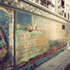

Previous Demo
Back to the Codrops Article
Arrow Navigation Styles
Ideas for arrow navigation effects and styles
Scroll down
Slide
Nothing to Loose
by Zach Wallis

Metro Love Stories
by Andrea Satorini